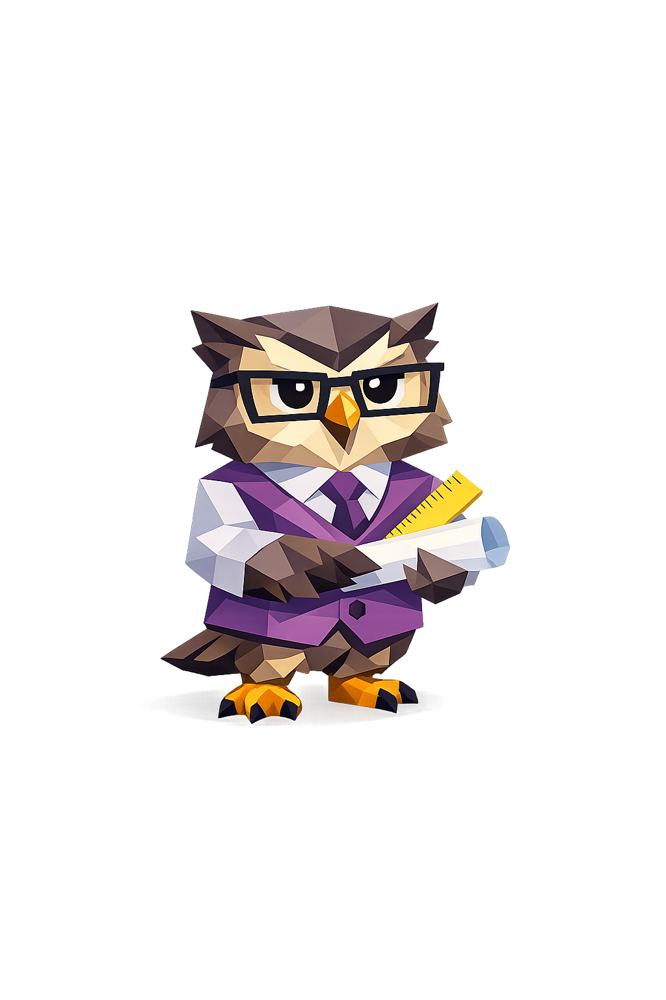

A readable path from local chat history to a personality-style summary.
Start with the pipeline, then decode the score categories, then land on the persona section. This format feels lighter than a dense docs page and gives users more control over how much detail they want.
Collect local history
Read supported histories from Claude Code, Codex, Copilot Chat, Cursor, and LM Studio.
Keep your prompts
Remove assistant text, system chatter, and tool output from scoring.
Score patterns
Use embeddings to summarize prompt behavior across style and intent dimensions.
Explain the result
Turn your strongest tendency into a persona that is memorable and human-readable.
The goal is comprehension: what data is used, what the scores mean, and why the persona fits.
The score types are grouped to feel more like a decoder than a report.
Each category answers a distinct question: how much you prompt, when you work, how you steer the AI, and which axis dominates your overall pattern.
How much you engage
These are the straightforward throughput signals that anchor the rest of the experience.
When your prompting happens
Temporal signals make it easier to spot patterns in rhythm, consistency, and late-night work.
How you steer the model
These scores describe the way you work with the AI, not just what you ask it to do.
The four traits behind personas
These are the dimensions that shape the persona system and explain why someone lands where they do.
The personas become easier to understand when users can compare all five at once.
Select a persona from the filmstrip to update the detail card. The goal is to make the persona feel earned, readable, and visually memorable.

The Architect
You think in specs, constraints, and acceptance criteria. You want the AI to follow the plan closely and you tend to review outputs carefully.